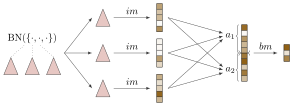
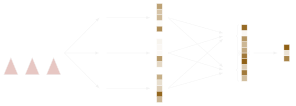
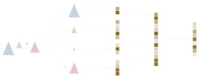
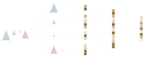

It is recommended to read the Motivation section first to understand the crucial ideas behind hierarchical multiple instance learning.
Nodes
Mill.jl enables representation of arbitrarily complex tree-like hierarchies and appropriate models for these hierarchies. It defines two core abstract types:
AbstractMillNodewhich stores data on any level of abstraction and its subtypes can be further nestedAbstractMillModelwhich helps to define a corresponding model. For each specific implementation ofAbstractMillNodewe have one or more specificAbstractMillModels for processing it.
Below we will introduce ArrayNode, BagNode and ProductNode together with their corresponding models. It is possible to define data and model nodes for more complex behaviors (see Custom nodes), however, these three core types are already sufficient for most tasks. For instance, we can represent any JSON document and use appropriate models to convert it to a vector represention or classify it (see Processing JSONs).
ArrayNode and ArrayModel
ArrayNode thinly wraps an array of features (specifically any subtype of AbstractArray):
julia> X = Float32.([1 2 3 ; 4 5 6])2×3 Matrix{Float32}: 1.0 2.0 3.0 4.0 5.0 6.0julia> AN = ArrayNode(X)2×3 ArrayNode{Matrix{Float32}, Nothing}: 1.0 2.0 3.0 4.0 5.0 6.0
Data carried by any AbstractMillNode can be accessed with the Mill.data function as follows:
julia> Mill.data(AN)2×3 Matrix{Float32}: 1.0 2.0 3.0 4.0 5.0 6.0
Similarly, ArrayModel wraps any function performing operation over this array. In example below, we wrap a feature matrix X and a Dense model from Flux.jl:
using Flux: Densejulia> f = Dense(2, 4)Dense(2 => 4) # 12 parametersjulia> AM = ArrayModel(f)ArrayModel(Dense(2 => 4)) 2 arrays, 12 params, 136 bytes
We can apply the model now with AM(AN) to get another ArrayNode and verify that the feedforward layer f is really applied:
julia> AM(AN)4×3 Matrix{Float32}: -0.750983 -1.09551 -1.44004 -0.0559078 0.113471 0.28285 -2.37767 -2.28613 -2.1946 0.272429 0.780232 1.28804julia> f(X) == AM(AN)true
A convenient property of all AbstractMillModel nodes is that after applying them to a corresponding data node we always obtain an array as output regardless of the type and complexity of the model. This becomes important later.
The most common interpretation of the data inside ArrayNodes is that each column contains features of one sample and therefore the node AN carries size(Mill.data(AN), 2) samples. In this sense, ArrayNodes wrap the standard machine learning problem, where each sample is represented with a vector, a matrix or a more general tensor of features. Alternatively, one can obtain a number of samples of any AbstractMillNode with numobs function from MLUtils.jl package, which Mill.jl also exports:
julia> numobs(AN)3
BagNode
BagNode represents the standard multiple instance learning problem, that is, each sample is a bag containing an arbitrary number of instances. In the simplest case, each instance is a vector:
julia> BN = BagNode(AN, [1:2, 0:-1, 3:3])BagNode 3 obs, 96 bytes ╰── ArrayNode(2×3 Array with Float32 elements) 3 obs, 80 bytes
where for simplicity we used AN from the previous example. It is also possible to use data directly, in such case it is wrapped in an ArrayNode automatically.
Each BagNode carries data and bags fields:
julia> Mill.data(BN)2×3 ArrayNode{Matrix{Float32}, Nothing}: 1.0 2.0 3.0 4.0 5.0 6.0julia> BN.bagsAlignedBags{Int64}(UnitRange{Int64}[1:2, 0:-1, 3:3])
Here, data can be an arbitrary AbstractMillNode storing representation of instances (ArrayNode in this case) and bags field contains information, which instances belong to which bag. In this specific case bn stores three bags (samples). The first one consists of a two instances {[1.0, 4.0], [2.0, 5.0]} (first two columns of AN), the second one is empty, and the thirs bag contains one instance {[3.0, 6.0]}. We can see that we deal with two top-level samples (bags):
julia> numobs(BN)3
whereas they are formed using three instances:
julia> numobs(AN)3
In Mill.jl, there are two ways to store indices of the bag's instances:
- in
AlignedBagsstructure, which accepts aVectorofUnitRanges and requires all bag's instances stored continuously:
julia> AlignedBags([1:2, 3:3])AlignedBags{Int64}(UnitRange{Int64}[1:2, 3:3])
- and in
ScatteredBagsstructure, which accepts aVectorofVectorss storing not necessarily contiguous indices:
julia> ScatteredBags([[2, 1], [3]])ScatteredBags{Int64}([[2, 1], [3]])
The two examples above are semantically equivalent, as bags are unordered collections of instances. An empty bag with no instances is in AlignedBags specified as empty range 0:-1 and in ScatteredBags as an empty vector Int[]. The constructor of BagNode accepts directly one of these two structures and tries to automagically decide the better type in other cases.
BagModel
Each BagNode is processed by a BagModel, which contains two (sub)models and an aggregation operator:
julia> im = ArrayModel(Dense(2, 5))ArrayModel(Dense(2 => 5)) 2 arrays, 15 params, 148 bytesjulia> a = SegmentedMax(5)SegmentedMax(ψ = Float32[0.0, 0.0, 0.0, 0.0, 0.0])julia> bm = Dense(5, 3)Dense(5 => 3) # 18 parametersjulia> BM = BagModel(im, a, bm)BagModel ↦ SegmentedMax(5) ↦ Dense(5 => 3) 3 arrays, 23 params, 220 bytes ╰── ArrayModel(Dense(2 => 5)) 2 arrays, 15 params, 148 bytes
The first network submodel (called instance model im) is responsible for converting the instance representation to a vector form:
julia> y = im(AN)5×3 Matrix{Float32}: 0.062954 0.159188 0.255422 -0.733941 -1.19342 -1.65289 0.249682 -0.0169376 -0.283558 0.506802 0.875205 1.24361 2.02213 2.84063 3.65913
Note that because of the property mentioned above, the output of instance model im will always be a Matrix. We get four columns, one for each instance. This result is then used in SegmentedMax operator a which takes vector representation of all instances and produces a single vector per bag:
julia> y = a(y, BN.bags)5×3 Matrix{Float32}: 0.159188 0.0 0.255422 -0.733941 0.0 -1.65289 0.249682 0.0 -0.283558 0.875205 0.0 1.24361 2.84063 0.0 3.65913
To read more about aggregation operators, see the Bag aggregation section. For an explanation how empty bags are aggregated, see Missing data.
Finally, y is then passed to a feed forward model (called bag model bm) producing the final output per bag. In our example we therefore get a matrix with three columns:
julia> y = bm(y)3×3 Matrix{Float32}: 0.655082 0.0 0.179365 -2.47276 0.0 -3.63168 -0.834547 0.0 -1.11086
However, the best way to use a bag model node is to simply apply it, which results into the same output:
julia> BM(BN) == ytrue
The whole procedure is depicted in the following picture:
 Three instances of the BagNode are represented by red subtrees are first mapped with instance model im, aggregated (aggregation operator here is a concatenation of two different operators $a_1$ and $a_2$), and the results of aggregation are transformed with bag model bm.
ProductNodes and ProductModels
ProductNode can be thought of as a Cartesian Product or a Dictionary. It holds a Tuple or NamedTuple of nodes (not necessarily of the same type). For example, a ProductNode with the BagNode and the ArrayNode from above and two more nodes as children would look like this:
julia> PN = tuple( ArrayNode(randn(Float32, 2, 3)), BagNode(ArrayNode(zeros(Float32, 4, 4)), [1:1, 2:2, 3:4]), BN, AN ) |> ProductNodeProductNode 3 obs, 0 bytes ├── ArrayNode(2×3 Array with Float32 elements) 3 obs, 80 bytes ├── BagNode 3 obs, 96 bytes │ ╰── ArrayNode(4×4 Array with Float32 elements) 4 obs, 120 bytes ├── BagNode 3 obs, 96 bytes │ ╰── ArrayNode(2×3 Array with Float32 elements) 3 obs, 80 bytes ╰── ArrayNode(2×3 Array with Float32 elements) 3 obs, 80 bytes
Analogically, the ProductModel contains a Tuple or NamedTuple of (sub)models processing each of its children (stored in ms field standing for models), as well as one more (sub)model m:
julia> ms = tuple( ArrayModel(Dense(2, 2)), BagModel(ArrayModel(Dense(4, 6)), SegmentedMean(6), Dense(6, 5)), BM, AM);julia> m = Dense(14, 9);julia> PM = ProductModel(ms, m)ProductModel ↦ Dense(14 => 9) 2 arrays, 135 params, 628 bytes ├── ArrayModel(Dense(2 => 2)) 2 arrays, 6 params, 112 bytes ├── BagModel ↦ SegmentedMean(6) ↦ Dense(6 => 5) 3 arrays, 41 params, 292 by ⋯ │ ╰── ArrayModel(Dense(4 => 6)) 2 arrays, 30 params, 208 bytes ├── BagModel ↦ SegmentedMax(5) ↦ Dense(5 => 3) 3 arrays, 23 params, 220 byt ⋯ │ ╰── ArrayModel(Dense(2 => 5)) 2 arrays, 15 params, 148 bytes ╰── ArrayModel(Dense(2 => 4)) 2 arrays, 12 params, 136 bytes
Again, since the library is based on the property that the output of each model is an array, the product model applies models from ms to appropriate children and vertically concatenates the output, which is then processed by model m. An example of model processing the above sample would be:
julia> y = PM.m(vcat([PM.ms[i](PN.data[i]) for i in 1:4]...))9×3 Matrix{Float32}: 1.30292 1.33766 0.462887 -2.32897 -1.89836 -2.76772 -0.893491 0.228725 -1.17165 0.179267 0.934965 -0.815158 -0.93786 -0.124089 -1.8643 -1.03552 -0.567542 -1.90516 -0.201476 -0.602289 0.793139 -0.501704 0.0751399 -1.98769 -0.90056 -0.648128 -2.29961
which is equivalent to:
julia> PM(PN) == ytrue
Application of this product model can be schematically visualized as follows:
 
